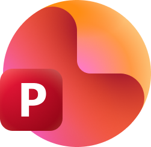
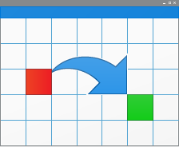

ATLAS, das Kontrollzentrum für alles, was auf deinem Laptop entsteht
Verstreute Dateien. Ein Atlas.
Projekte, Präsentationen, Skripte, Server und Werkzeuge. Lokal auf deinem Laptop, an einem Ort.
Karte aufschlagenEchte Oberfläche, erfundene Daten. Klick dich durch, Aktionen wie «Server starten» sind gesperrt.
Register
Jede Seite von ATLAS, mit einem Satz dazu. Ein Klick öffnet sie in der Live-Demo.
Bibliothek
- ÜbersichtBegrüssung, Kennzahlen, Live-Kacheln
- Alle ProjekteKarten oder Tabelle, filtern und sortieren
- FavoritenMit dem Stern markierte Projekte

PräsentationenAutomatisch gefunden, nach Modul sortiert- DokumenteWord und PDF, Versionen zusammengefasst

ZeitachseWann woran gearbeitet wurde
Steuern
Überwachen
IT-Werkzeuge
Was beim Start passiert
ATLAS.lnkDoppelklick auf die Verknüpfung. Kein Installer, kein Dienst im Hintergrund.
127.0.0.1:4321Ein kleiner Python-Server startet. Er ist nur auf diesem Gerät erreichbar.
catalog.jsonProjektordner und Office-Dateien werden gescannt. Neue Ordner landen unter «Unsortiert».
Edge --appATLAS öffnet sich als eigenes Fenster mit eigenem Symbol in der Taskleiste.
20 minOhne offenes Fenster beendet sich der Server, ausser eine Automation läuft.
ATLAS ist ein persönliches Projekt von Dominic Aebersold, Informatiker EFZ Plattformentwicklung im 2. Lehrjahr. Es ist entstanden, weil Projekte, Schulmodule und Skripte über den ganzen Laptop verteilt waren. Die Oberfläche läuft auf dieser Seite als Demo, der Server-Teil ist nicht öffentlich. Portfolio